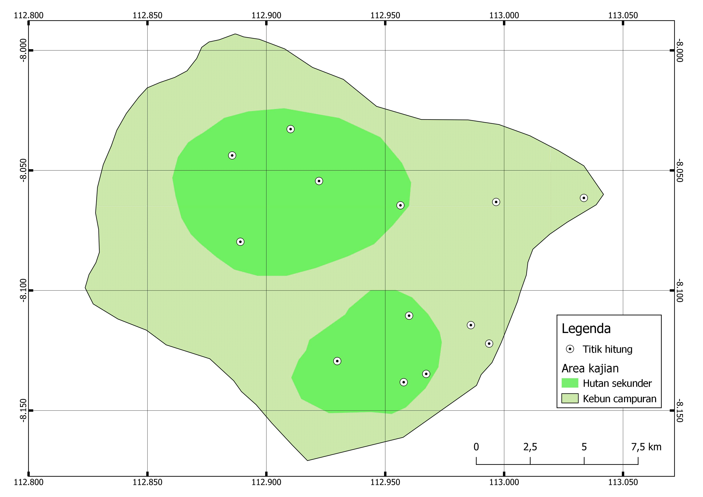

Teknik | Metode | Target Organisme | Rujukan |
|---|---|---|---|
Observatif | Quadrat plot | Tumbuhan | (Elzinga et al., 2009) |
Point count | Burung | (Buckland, 2006) | |
Line transect | Burung, mamalia dan primata | (Anderson et al., 1979) | |
Recce walk | Mamalia, reptil dan amfibi | (Heyer et al., 1994) | |
Visual encounter survey | Reptil dan amfibi | ||
Penangkapan | Passive acoustic monitoring | Burung, kelelawar pemakan serangga, amfibi | (Browning et al., 2017) |
Live trap | Mamalia (Tikus dan bajing) | (Bovendorp et al., 2017) | |
Mist net | Burung, kelelawar pemakan buah | (Prasetyo et al., 2011) | |
Harp trap | kelelawar | ||
Camera trap | Burung terestrial, mamalia berukuran sedang - besar | (Rovero & Zimmermann, 2016) |
2 Rancangan Survei
Beragam teknik untuk mencuplik atau mengamati satwa liar telah dibahas secara luas dalam berbagai panduan (McComb et al. 2010; Sotherton et al. 1995). Panduan ini merangkum beberapa teknik yang sering digunakan dalam ruang lingkup kerja Fauna & Flora`s Indonesia Programme untuk melakukan survei pada fauna dan flora di bioma terestrial. Secara umum, teknik-teknik ini dibagi menjadi dua kategori berdasarkan metode pengumpulan datanya: observasi atau perjumpaan langsung dan penangkapan.
Pada kategori observasi atau perjumpaan langsung, data diperoleh dengan mengamati atau mencatat keberadaan satwa tanpa menangkapnya, seperti melalui pengamatan visual atau pendengaran. Sedangkan pada kategori penangkapan, data dapat dikumpulkan melalui penangkapan fisik satwa, serta menggunakan media lain seperti foto dan rekaman suara (Tabel 2.1).
Setiap metode survei yang digunakan (Tabel 2.1), membutuhkan unit cuplik sebagai dasar pengambilan data. Unit cuplik adalah satuan pengamatan atau pengumpulan data yang harus ditetapkan secara konsisten sepanjang survei. Misalnya, jika unit cuplik yang digunakan adalah transek sepanjang 2 km untuk pengamatan mamalia, maka semua transek lainnya harus memiliki radius yang sama. Konsistensi ini penting untuk memastikan bahwa data yang diperoleh dari setiap unit cuplik dapat dibandingkan secara valid.
Unit cuplik yang tepat juga harus cukup representatif untuk menggambarkan keseluruhan area yang disurvei. Oleh karena itu, jumlah unit cuplik yang digunakan harus memadai agar hasil survei dapat mencerminkan kondisi nyata di lapangan. Semakin banyak unit cuplik yang digunakan, semakin tinggi kemungkinan untuk mendapatkan data yang akurat dan representatif.
Replikasi atau pengulangan pengamatan pada unit cuplik juga sangat penting untuk mengurangi bias dan meningkatkan keandalan data. Sebagai contoh, pengamatan di suatu plot yang dilakukan hanya satu kali mungkin akan melewatkan banyak spesies. Namun, jika pengamatan diulang beberapa kali, kemungkinan akan ditemukan lebih banyak spesies yang mungkin terlewat pada pengamatan awal.
Jumlah dan distribusi unit cuplik mempengaruhi hasil analisis dan interpretasi data. Misalnya, melakukan satu kali survei transek sepanjang 2 km mungkin tidak cukup untuk menyimpulkan keberadaan atau distribusi spesies di suatu area. Namun, melakukan beberapa survei transek yang tersebar di berbagai lokasi dan waktu yang berbeda, serta diulang beberapa kali, akan memberikan data yang lebih kuat dan representatif untuk analisis yang lebih akurat. Dengan menggunakan unit cuplik yang konsisten dan jumlah yang memadai, survei keanekaragaman hayati dapat menghasilkan data yang lebih akurat.
2.1 Bentuk dan peletakan unit cuplik
Dalam kajian survei keanekaragaman hayati yang dilakukan oleh Fauna & Flora’s Indonesia Programme, kami menggunakan pendekatan survei yang komprehensif untuk mencakup empat kelompok organisme utama secara bersamaan (Avifauna, herpetofauna, mamalia dan vegetasi) dalam satu rangkaian survei. Pendekatan ini menggunakan transek sepanjang 2 km sebagai unit cuplik utama, dengan metode pengambilan sampel tambahan berupa sub-unit cuplik yang disesuaikan untuk masing-masing taksa di sepanjang transek tersebut.
[ilustrasi transek (make it nested)]
Transek digunakan untuk pengamatan langsung satwa mamalia dan herpetofauna, kuadrat plot digunakan untuk pengumpulan data vegetasi, dan plot sirkular atau titik hitung digunakan untuk survei burung. Dengan desain ini, satu unit cuplik dapat mencakup area seluas sekitar 2 hektar untuk mamalia dan herpetofauna, 1,25 hektar untuk vegetasi, dan 4,8 hektar untuk burung.
Peletakan unit cuplik harus dapat menggambarkan keseluruhan lokasi survei secara umum. Oleh karena itu, penempatan unit cuplik harus disesuaikan dengan tujuan studi dan kondisi habitat. Terdapat beberapa metode untuk menentukan lokasi unit cuplik, antara lain: purposive, random, dan stratified sampling.
2.1.1 Purposive sampling
Metode ini dikenal juga sebagai judgmental atau selective sampling. Dalam metode ini, penempatan unit cuplik dipilih secara langsung berdasarkan subjektivitas peneliti dengan pertimbangan tertentu, seperti area di mana keberadaan spesies telah diketahui. Metode ini umumnya bersifat kualitatif dan tidak melibatkan analisis statistik yang mendalam. Metode ini sering digunakan ketika lokasi keberadaan spesies telah diketahui atau diperkirakan.
2.1.2 Random sampling
Pada metode ini, penempatan unit cuplik ditetapkan secara acak di dalam batas-batas area yang telah ditentukan sebelumnya. Asumsi dasar metode ini adalah bahwa setiap titik memiliki probabilitas yang sama untuk dipilih, sehingga semakin banyak titik yang dicuplik, semakin mewakili populasi area tersebut. Metode ini baik diaplikasikan pada area survei di mana distribusi populasi cenderung normal dan habitatnya relatif homogen, seperti survei burung di area hutan dengan tipe habitat yang seragam (Gambar 2.1).

2.1.3 Stratified sampling
Metode stratifikasi digunakan untuk membatasi distribusi unit cuplik di area yang memiliki perbedaan tipe habitat. Asumsinya adalah bahwa tipe habitat yang berbeda cenderung memberikan representasi populasi yang berbeda secara signifikan.
Langkah awal dalam stratifikasi adalah membagi area survei berdasarkan kategori tutupan lahan atau tipe habitat, sehingga diperoleh sejumlah strata yang sesuai dengan jumlah tipe habitat yang ada. Di masing-masing strata, unit cuplik kemudian dipilih secara acak, memastikan setiap strata memiliki keterwakilan cuplik yang setara.
Namun demikian, jumlah unit cuplik di setiap strata bergantung pada prinsip variabilitas spesies. Sebagai contoh, hutan sekunder alami cenderung memiliki kekayaan jenis yang lebih tinggi dibandingkan dengan kawasan perkebunan. Oleh karena itu, jumlah unit cuplik di kawasan hutan harus lebih banyak dibandingkan di perkebunan (Gambar 2.2).

2.2 Jumlah unit cuplik
Penentuan jumlah unit cuplik dalam survei sangat bergantung pada tujuan spesifik survei dan kondisi habitat. Di Fauna & Flora’s Indonesia Programme, jumlah unit cuplik sering ditentukan berdasarkan jumlah plot vegetasi minimum menggunakan Spreadsheet tool yang dikembangkan oleh Winrock International (Walker, Pearson, and Brown 2007). Pendekatan ini dirancang untuk menghitung jumlah unit cuplik minimum yang diperlukan untuk survei yang efektif dan efisien, dengan mempertimbangkan faktor-faktor seperti luas strata, ukuran plot, dan variabilitas biomassa.
Tool Spreadsheet ini menggunakan tiga langkah utama:
Menentukan Luas Setiap Strata:
Bagi area survei menjadi beberapa strata atau kelompok berdasarkan tipe tutupan lahan.
Hitung luas masing-masing strata yang akan disurvei.
Menghitung Ukuran Plot dan Variabilitas:
Tetapkan ukuran plot yang akan digunakan dalam survei (misalnya, 0,25 hektar untuk plot vegetasi).
Gunakan data dari survei sebelumnya atau survei awal untuk mengestimasi nilai rata-rata (rerata) dan simpangan baku biomassa di setiap stratum. Dalam konteks ini, Anda juga bisa merujuk pada National Forest Reference Level (Government of Indonesia 2022) pada Tabel 5 dan 6 untuk mendapatkan acuan nilai rata-rata biomassa dan variabilitasnya pada stratum tertentu.
Menetapkan Parameter Tingkat Kepercayaan:
- Masukkan data luas strata, ukuran plot, dan variabilitas ke dalam spreadsheet Excel pada tab “biomassstocks-plots”. Di sini, Anda dapat menghitung jumlah plot minimum yang diperlukan dengan menetapkan tingkat kepercayaan 95% dan galat sebesar 5%.
Pendekatan ini memastikan bahwa jumlah unit cuplik yang digunakan dalam survei cukup untuk menghasilkan data yang representatif dan dapat diandalkan, serta memaksimalkan efisiensi sumber daya yang tersedia.
Selain menentukan jumlah unit cuplik minimum, penting juga untuk mempertimbangkan jarak minimal antar unit cuplik. Jarak ini bervariasi tergantung pada tujuan survei dan karakteristik habitat setempat. Beberapa penelitian merekomendasikan jarak antar transek sekitar 100 hingga 200 meter (Buckland et al. 2015; Bibby, Burgess, and Hill 1992). Namun, jarak tersebut dapat disesuaikan, menjadi lebih kecil atau lebih besar, tergantung pada spesies yang diteliti dan karakteristik habitat. Asumsi penting yang harus dipenuhi adalah bahwa hewan yang terdeteksi pada satu unit cuplik tidak muncul kembali atau terhitung ulang pada unit cuplik yang berdekatan. Dengan demikian, penentuan jarak yang tepat antar unit cuplik akan membantu meminimalkan risiko penghitungan ganda dan meningkatkan keakuratan data survei.
2.3 Pembuatan transek
Setelah penentuan letak dan jumlah unit cuplik ditentukan, langkah selanjutnya sebelum melakukan survei adalah pembuatan jalur transek. Pembuatan jalur ini dilakukan minimal seminggu sebelum survei dimulai, dengan cara menyiangi tutupan bawah hutan sehingga membentuk jalur yang lurus. Hal ini bertujuan agar satwa yang menghuni habitat tersebut memiliki waktu untuk beradaptasi dengan jalur transek yang sudah dibuat. Selain itu, pembuatan transek juga memungkinkan tim survei untuk lebih fokus dalam mengamati satwa dan berpindah tempat tanpa harus membuka jalan yang tertutup oleh semak.
Namun, dalam pembuatan jalur transek, penting untuk memastikan bahwa habitat tidak mengalami perubahan signifikan. Penyiangan harus dilakukan seminimal mungkin untuk menjaga keutuhan dan fungsi ekologis habitat, serta untuk mengurangi dampak negatif terhadap flora dan fauna di sekitar jalur survei. Prinsip kehati-hatian harus selalu diterapkan agar survei dapat dilakukan dengan tetap mempertahankan kondisi alami lingkungan.
2.3.1 Persiapan Tim
Jumlah total anggota tim yang dibutuhkan untuk membuat jalur transek idealnya adalah 5 orang dengan tugas yang berbeda-beda. Tabel 2.2 menjelaskan jumlah dan tugas anggota tim yang terlibat dalam proses pembuatan transek:
| Peran | Tanggung jawab | Syarat khusus |
|---|---|---|
| Penebas I | Penebas utama untuk membuka jalur | Tidak ada |
| Penebas II | Penebas kedua untuk melebarkan jalur | Tidak ada |
| Penebas III | Penebas ketiga untuk merapihkan jalur | Tidak ada |
| Navigator | Menunjukan arah jalan dan lokasi transek, pemasang pita penanda dan merekam jalur transek | Mampu melakukan navigasi dengan kompas dan GPS |
| Logistik | Pengaturan logistik selama pembuatan transek | Terampil dalam pengaturan logistik |
Peralatan yang dibutuhkan dalam pembuatan transek dapat dilihat di Tabel 2.3.
| Peralatan | Jumlah |
|---|---|
| Parang tebas | 3 unit |
| Kompas orientasi | 1 unit |
| GPS | 1 unit |
| Pita penanda | 1 gulung |
| Batu asah | 3 unit |
2.3.2 Langkah kerja
Anggota tim yang bertanggung jawab memegang kompas mengarahkan sudut pembuatan transek agar senantiasa lurus.
Penebas utama menebas semak dan ranting untuk membuka jalan
Penebas kedua dan ketiga melebarkan jalan hingga kira-kira selebar 1,5 - 2 meter.
Navigator selain merekam jalur dengan GPS, juga menandai area yang sudah dibuka dengan pita tagging setiap 50 meter pada ranting pohon.
Navigator juga disarankan untuk mencatat temuan lain ke dalam GPS, fitur yang mungkin dapat digunakan oleh tim survei kehati, seperti: Sumber air, persimpangan, lokasi kamp ideal, lokasi dengan konsentrasi biodiversitas yang tinggi dan lainnya.